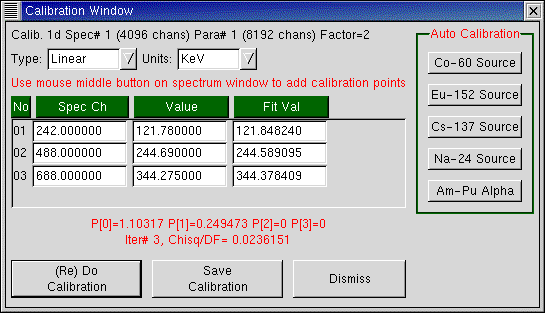

As has been emphsised already (see Calibration) one must take note that it is the ADCs corresponding to the spectra that are being calibrated not the spectra. This can be different in case the spectra resolution is less than the ADC resolution. However, the Calibrate interface hides this difference from the user. The channel numbers shown are as per the spectrum resolution, but when calibration is done, the appropriate factor is applied automatically. To make things clear, the top of the Calibrate window provides a one line explanation.
In the Calibrate interface we first select an option among "Linear", "Quadratic" and "Quad+Sqrt" and the units "KeV", "MeV", "ns" etc (or any other unlisted unit by typing inside the box).
After that we either calibrate manually or do an auto calibration.
For Manual Calibration, the channel numbers of two or more points in the spectrum are selected by clicking the middle-button of the mouse at the appropriate point. (if the middle button doesn't work see: Mouse Problems)
The energies (or e.g. time values for a time spectrum, distance for a position spectrum etc.) are entered by typing the values in the second column. Now if "(Re)Do Calibration is clicked, the calibration is done and the coefficients displayed. The calibration constants will now be in the memory of LAMPS and if the cursor is dragged across the spectrum, the calibrated values will be displayed. (You can test this without Dismissing the Calibrate Window). In order to maintain the calibration for later use, Save Calibration can be done to keep the values in a specified file. (To read this file one has to use Calibration - Read Calibration from the main menu). Save Calibration from the main menu is equivalent to Save Calibration from here.
For Auto Calibration Click on one of the standard sources listed on the right. LAMPS identifies the peaks in the spectrum and lists the peak positions along with the energies. If it looks okay, one can now click (Re)Do Calibration. The algorithms for Auto Calibration are far from perfect and may not work in every case. They are intended to work only for high resolution HpGe detectors (except Am-Pu alpha source, which is intended for a surface barrier detector). Auto Calibration will not work for a NaI spectrum. When Auto Calibration does not work, manual calibration must be used. If you send a sample Co-60 or Eu-152 HpGe spectrum where you find Auto Calibration fails to DrAmbar@gmail.com, we can try to improve the algorithms.